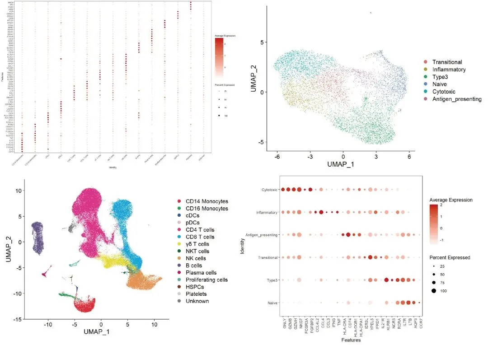
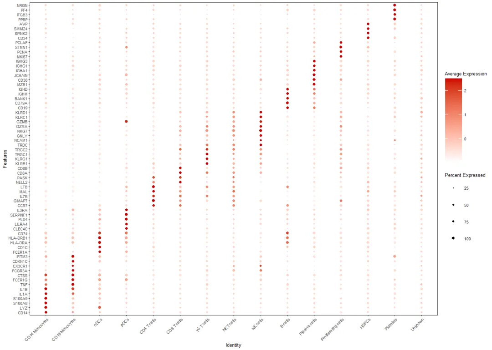
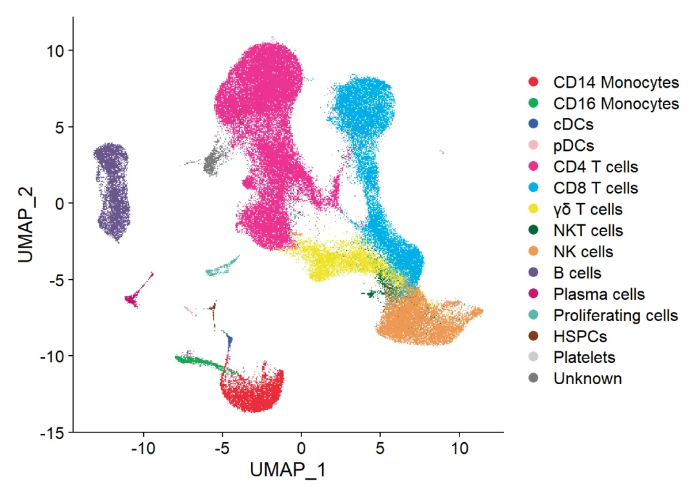
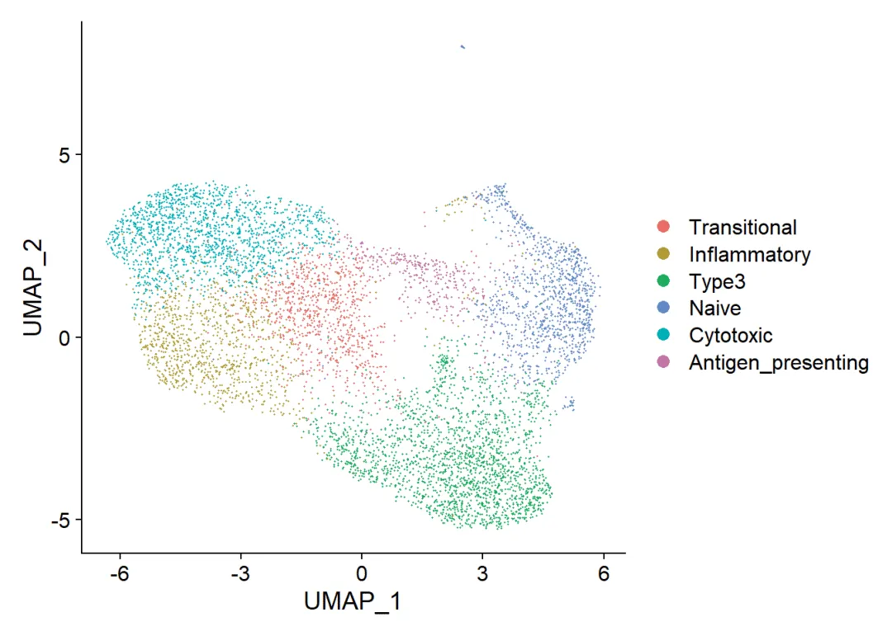
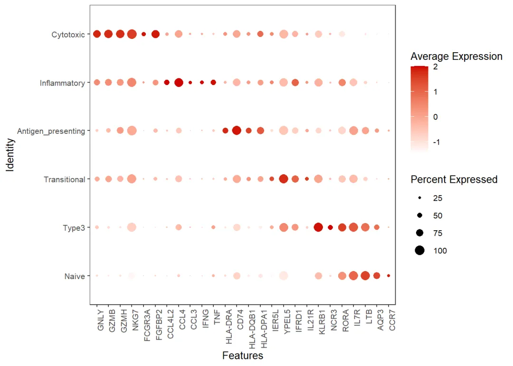

代码复写| 疟疾中免疫细胞亚群的调控响应
原文：https://mp.weixin.qq.com/s?__biz=MzAwMzIzOTk5OQ==&mid=2247507659&idx=2&sn=a6860bb0eb8d3854a37acd0342777956&chksm=9b3ca79bac4b2e8dc0c3aa83c000894a53e2b316388495703e58d42ab205dd093bf578807b74#rd 合集：单细胞教程全收录 / 全文复现
评审环节开始！
** 写在前面**
首届“寻因杯”单细胞代码复写大赛正在展开评审环节，这次带来的是16号作品。本作品复写了题为"Single cell transcriptomics shows that malaria promotes unique regulatory responses across multiple immune cell subsets"的论文.文章链接 ：https://doi.org/10.1038/s41467-023-43181-7数据原始链接： 投稿人未提供 复现图片集锦 ：

文献简介 ：投稿人未提供
一、复写内容
Load packages
library(Seurat)
library(SeuratObject)
library(dplyr)
library(stringr)
library(ggplot2)
library(ggpubr)
library(tibble)
library(UpSetR)
library(BiocManager)
library(MAST)
1.1 Datainput
There is a folder within working directory “Cell_ranger_outputs” that contains the below folders with these files in each folder “barcodes.tsv.gz”, “features.tsv.gz”,“matrix.tsv.gz”.
dir='./GSE217930_RAW/'
fs = list.files('GSE217930_RAW/',pattern = '^GSM')
samples=str_split(fs,'_',simplify = T)[,1]
lapply(unique(samples),function(x){
y=fs[grepl(x,fs)]
folder=paste0("GSE217930_RAW/", str_split(y[1],'_',simplify = T)[,1])
dir.create(folder,recursive = T)
file.rename(paste0("GSE217930_RAW/",y[1]),file.path(folder,"barcodes.tsv.gz"))
file.rename(paste0("GSE217930_RAW/",y[2]),file.path(folder,"features.tsv.gz"))
file.rename(paste0("GSE217930_RAW/",y[3]),file.path(folder,"matrix.mtx.gz"))
})
setwd("./GSE217930_RAW/")
files <- dir("./GSE217930_RAW", pattern = "^[^/]+$")
new_names <- c("sampleA", "sampleB", "sampleC", "sampleD", "sampleE","sampleF", "sampleG", "sampleH", "sampleI", "sampleJ",
"sampleK", "sampleL", "sampleM", "sampleN", "sampleO","sampleP", "sampleQ", "sampleR", "sampleS", "sampleT")
for (i in seq_along(files)) {
old_name <- file.path(dir, files[i])
new_name <- file.path(dir, new_names[i])
file.rename(from = old_name, to = new_name)
}
#Put in Read10X
for (file in new_names <- c("sampleA", "sampleB", "sampleC", "sampleD", "sampleE","sampleF", "sampleG", "sampleH", "sampleI", "sampleJ","sampleK", "sampleL", "sampleM", "sampleN", "sampleO","sampleP", "sampleQ", "sampleR", "sampleS", "sampleT")){
seurat_data <- Read10X(data.dir = paste0("GSE217930_RAW/", file))
seurat_obj <- CreateSeuratObject(counts = seurat_data,
min.cells = 3,
min.features = 200,
project = file)
assign(file, seurat_obj)
}
#merge these objects together into a single Seurat object.
merged_seurat <- merge(x = A,
y = new_names <- c("sampleA", "sampleB", "sampleC", "sampleD", "sampleE","sampleF", "sampleG", "sampleH", "sampleI", "sampleJ","sampleK", "sampleL", "sampleM", "sampleN", "sampleO","sampleP", "sampleQ", "sampleR", "sampleS", "sampleT"),
add.cell.id = c("adult1day0", "adult1day7", "adult1day28","adultc1","child1day0","child1day7","child1day28","adultc2","adult2day0", "adult2day28", "adult3day0", "adult3day28", "child2day0", "child2day28", "child3day0", "child3day28", "adult2day7", "adult3day7", "child2day7", "child3day7"))
View(merged_seurat@meta.data)
## 1.1.2 Add relative information
# Add number of genes per UMI for each cell to metadata
merged_seurat$log10GenesPerUMI <- log10(merged_seurat$nFeature_RNA) / log10(merged_seurat$nCount_RNA)
# Compute percent mito ratio
merged_seurat$mitoRatio <- PercentageFeatureSet(object = merged_seurat, pattern = "^MT-")
merged_seurat$mitoRatio <- merged_seurat@meta.data$mitoRatio / 100
# Create the metadata dataframe by extracting the meta.data slot from the Seurat object
metadata <- merged_seurat@meta.data
head(metadata)
metadata$cells <- rownames(metadata)
# Add cell IDs to metadata
metadata <- metadata %>%
dplyr::rename(seq_folder = orig.ident,
nUMI = nCount_RNA,
nGene = nFeature_RNA)
# Add metadata back to Seurat object
merged_seurat@meta.data <- metadata
saveRDS(merged_seurat, "merged_seurat.RDS")
1.2 QC
## 1.2.1C reate meta.data for timepoints and controls
sample_to_label <- c(
"adult1day0" = "Day0", "adult2day0" = "Day0", "adult3day0" = "Day0",
"child1day0" = "Day0", "child2day0" = "Day0", "child3day0" = "Day0",
"adult1day7" = "Day7", "adult2day7" = "Day7", "adult3day7" = "Day7",
"child1day7" = "Day7", "child2day7" = "Day7", "child3day7" = "Day7",
"adult1day28" = "Day28", "adult2day28" = "Day28", "adult3day28" = "Day28",
"child1day28" = "Day28", "child2day28" = "Day28", "child3day28" = "Day28",
"adultc1" = "Control", "adultc2" = "Control"
)
merged_seurat@meta.data$day <- sample_to_label[merged_seurat@meta.data$sample]
## 1.2.2 ell Filtering
filtered_seurat <- subset(x = merged_seurat,
subset= (nUMI >= 500) &
(nGene >= 250) &
(log10GenesPerUMI > 0.80) &
(mitoRatio < 0.20))
# Extract counts
counts <- GetAssayData(object = filtered_seurat, slot = "counts")
nonzero <- counts > 0
keep_genes <- Matrix::rowSums(nonzero) >= 10
filtered_counts <- counts[keep_genes, ]
filtered_seurat <- CreateSeuratObject(filtered_counts, meta.data = filtered_seurat@meta.data)
# Create a clean (post-filtered) metadata dataframe by extracting the meta.data slot from the flitered Seurat object
metadata_clean <- filtered_seurat@meta.data
# Save R object as RDS to load at any time
saveRDS(filtered_seurat, "filtered_seurat.RDS")
1.3 Normalization
# Split seurat object by sample to perform cell cycle scoring and normalization on all samples
split_seurat <- SplitObject(filtered_seurat, split.by = "sample")
split_seurat <- split_seurat[c("adult1day0", "adult1day7", "adult1day28","adultc1","child1day7","child1day28","adultc2","adult2day0", "adult2day28", "adult3day0", "adult3day28", "child2day0", "child2day28", "child3day0", "child3day28", "adult2day7", "adult3day7", "child2day7", "child3day7")]
# Defined G2M and S phase cell cycle based on cannonical markers
g2m_genes <- c("NCAPD2", "ANLN", "TACC3", "HMMR", "GTSE1", "NDC80", "AURKA", "TPX2", "BIRC5", "G2E3", "CBX5", "RANGAP1", "CTCF", "CDCA3", "TTK", "SMC4", "ECT2", "CENPA", "CDC20", "NEK2", "CENPF", "TMPO", "HJURP", "CKS2", "DLGAP5", "PIMREG", "TOP2A", "PSRC1", "CDCA8", "CKAP2", "NUSAP1", "KIF23", "KIF11", "KIF20B", "CENPE", "GAS2L3", "KIF2C", "NUF2", "ANP32E", "LBR", "MKI67", "CCNB2", "CDC25C", "HMGB2", "CKAP2L", "BUB1", "CDK1", "CKS1B", "UBE2C", "CKAP5", "AURKB", "CDCA2", "TUBB4B", "JPT1")
s_genes <- c("UBR7", "RFC2", "RAD51", "MCM2", "TIPIN", "MCM6", "UNG", "POLD3", "WDR76", "CLSPN", "CDC45", "CDC6", "MSH2", "MCM5", "POLA1", "MCM4", "RAD51AP1", "GMNN", "RPA2", "CASP8AP2", "HELLS", "E2F8", "GINS2", "PCNA", "NASP", "BRIP1", "DSCC1", "DTL", "CDCA7", "CENPU", "ATAD2", "CHAF1B", "USP1", "SLBP", "RRM1", "FEN1", "RRM2", "EXO1", "CCNE2", "TYMS", "BLM", "PRIM1", "UHRF1")
for (i in 1:length(x = split_seurat)) {
split_seurat[[i]] <- NormalizeData(object = split_seurat[[i]], verbose = FALSE)
split_seurat[[i]] <- CellCycleScoring(split_seurat[[i]], g2m.features=g2m_genes, s.features=s_genes)
split_seurat[[i]] <- FindVariableFeatures(object = split_seurat[[i]], selection.method = "vst",
nfeatures = 2000, verbose = FALSE)
1.4 Find Integration Anchors
# Find Integration Anchors and integrate data
integ.anchors <- FindIntegrationAnchors(object.list = split_seurat, dims = 1:20)
seurat_integrated <- IntegrateData(anchorset = integ.anchors, dims = 1:20)
DefaultAssay(seurat_integrated) <- "integrated"
# Run the standard workflow for visualization and clustering
seurat_integrated <- ScaleData(seurat_integrated, vars.to.regress = c("mitoRatio"))
seurat_integrated <- RunPCA(seurat_integrated, npcs = 30)
# Run UMAP
seurat_integrated <- RunUMAP(seurat_integrated, dims = 1:30, reduction = "pca")
# Determine the K-nearest neighbor graph
seurat_integrated <- FindNeighbors(object = seurat_integrated, dims = 1:30)
seurat_integrated <- FindClusters(object = seurat_integrated, resolution=0.6)
DimPlot(seurat_integrated, reduction = "umap", label = TRUE, label.size = 6)
ident_to_donor <- c(
"adult1day0" = "Adult1", "adult2day0" = "Adult2", "adult3day0" = "Adult3",
"child2day0" = "Child2", "child3day0" = "Child3",
"adult1day7" = "Adult1", "adult2day7" = "Adult2", "adult3day7" = "donor7",
"child1day7" = "Child1", "child2day7" = "Child2", "child3day7" = "Child3",
"adult1day28" = "Adult1", "adult2day28" = "Adult2", "adult3day28" = "Adult3",
"child1day28" = "Child1", "child2day28" = "Child2", "child3day28" = "Child3",
"adultc1" = "Control1", "adultc2" = "Control2"
)
seurat_integrated@meta.data$donor <- ident_to_donor[seurat_integrated@meta.data$orig.ident]
#Set identity at integrated_snn_res.0.6 to compare clusters at chosen resolution
Idents(seurat_integrated) <- "integrated_snn_res.0.6"
saveRDS(seurat_integrated, "seurat_integrated.RDS")
1.5 Set annotation as active identity
seurat_integrated <- RenameIdents(object = seurat_integrated,
"0"= "CD4 T cells",
"1"="CD4 T cells",
"2"= "CD8 T cells",
"3" = "NK cells",
"4" = "CD8 T cells",
"5" = "CD4 T cells",
"6" = "γδ T cells",
"7" = "CD14 Monocytes",
"8" = "CD4 T cells",
"9" = "NK cells",
"10" = "B cells",
"11" = "B cells",
"12" = "CD8 T cells",
"13" = "CD4 T cells",
"14" = "CD4 T cells",
"15" = "Uncharacterised",
"16" = "CD16 Monocytes",
"17" = "NKT cells",
"18" = "Plasma cells",
"19" = "cDCs",
"20" = "pDCs",
"21" = "HSPCs",
"22" = "Platelets")
# Using cell selector rename distinct MKI67 cluster as 'Proliferating cells'
cells.proliferating <- CellSelector(plot = plot)
seurat_integrated <- CellSelector(plot = plot, object = seurat_integrated, ident = "Proliferating cells")
# Add cluster annotation in active identity to meta.data and order identities for dotplot visualisation
seurat_integrated[["annotate_cluster"]] <- Idents(object = seurat_integrated)
seurat_integrated@meta.data$annotate_cluster <- factor(seurat_integrated@meta.data$annotate_cluster, levels = c("CD14 Monocytes","CD16 Monocytes","cDCs","pDCs","CD4 T cells","CD8 T cells","γδ T cells","NKT cells","NK cells","B cells","Plasma cells","Proliferating cells","HSPCs","Platelets","Uncharacterised"))
2. Cell cluster
2.1 Fig 1b Dot plot of the mean expression of marker genes used to annotate cell types
# Define the list of features
features <- c("CD14", "LYZ", "S100A8", "S100A9", "IL1A", "IL1B", "TNF", "FCER1G", "CTSS", "FCGR3A", "CX3CR1",
"CDKN1C", "IFITM3", "FCER1A", "CD1C", "HLA-DRA", "HLA-DRB1", "CD74", "CLEC4C", "LILRA4", "PLD4",
"SERPINF1", "IL3RA", "CCR7", "GIMAP7", "IL7R", "MAL", "LTB", "NELL2", "PASK", "CD8A", "CD8B",
"KLRB1", "KLRG1", "TRGC1", "TRGC2", "TRDC", "NCAM1", "GNLY", "NKG7", "GZMA", "GZMB", "KLRC1",
"KLRD1", "CD19", "CD79A", "BANK1", "IGHM","IGHD", "MZB1", "CD38", "JCHAIN", "IGHA1", "IGHG1",
"IGHG3", "MKI67", "PCNA", "STMN1", "PCLAF", "CD34", "SPINK2", "SMIM24", "AVP", "PPBP", "ITGB3",
"PF4", "NRGN")
# Define the color scheme
colors <- c("white", "red3")
# Create the DotPlot
DotPlot(seurat_integrated, features = features,
cols = colors,dot.scale = 1) +
coord_flip() +
theme_bw(base_size = 5) +
theme(axis.text.x = element_text(angle = 45, vjust = 1, hjust = 1)) +
theme(panel.grid.major = element_blank(), panel.grid.minor = element_blank())

save Fig 1b
2.2 Fig 1c UMAP of all cells in integrated analysis
# View the levels of cell type identities in the Seurat object
cell_type_levels <- levels(seurat_integrated)
print(cell_type_levels)
## [1] "CD14 Monocytes" "CD16 Monocytes" "cDCs"
## [4] "pDCs" "CD4 T cells" "CD8 T cells"
## [7] "γδ T cells" "NKT cells" "NK cells"
## [10] "B cells" "Plasma cells" "Proliferating cells"
## [13] "HSPCs" "Platelets" "Unknown"
custom_colors1 <- c("CD14 Monocytes" = "#eb2c3a",
"CD16 Monocytes" = "#14aa57",
"cDCs" = "#385ea8",
"pDCs" = "#f0bcbe",
"CD4 T cells" = "#ec3291",
"CD8 T cells" = "#00afe8",
"γδ T cells" = "#f0e22c",
"NKT cells" = "#016837",
"NK cells" = "#ee9956",
"B cells" = "#6b578d",
"Plasma cells" = "#ca146e",
"Proliferating cells" = "#5ab6ae",
"HSPCs" = "#803c1c",
"Platelets" = "#cbcecd",
"Unknown" = "#7b7d7f")
DimPlot(seurat_integrated, reduction = "umap", label = FALSE, raster = TRUE, cols = custom_colors1)

save Fig 1c
3. Sub-cluster analysis of γδ T cells
3.1 QC
3.2 Scale Data and Run PCA
3.3 Using cell selector investigate γδ T cells
3.4 Choose sub-clusters for next step to rerun
3.5 Findmarkers from sub-clusters
3.6 Fig 4a subsets of γδ T cells annotation & visualization
Cytotoxic GNLY GZMB GZMH NKG7 FCGR3A FGFBP2 Inflammatory “CCL4l2”, CCL4 “CCL3”,“IFNG”, “TNF” antigen-presenting “HLA-DRA”, “CD74”, “HLA-DQB1”, “HLA-DRB1”,““HLA-DPA1”, “HLA-DPB1”,“HLA-DRB5” transitional YBX3, ER5L ypel5 ifrd1 akna(cd40 related) type 3 - il7r klrb1 ncr3 RORA naive - ltb ccr7 aqp3 cxcr3
# annotation for γδ T cells
Idents(annotated_gdF_sub)<-"integrated_snn_res.0.6"
#DimPlot(annotated_gdF_sub, reduction = "umap")
annotated_gdF_sub@meta.data$res0.6_collapsed[annotated_gdF_sub@meta.data$integrated_snn_res.0.6 == 0] <- "Cytotoxic"
annotated_gdF_sub@meta.data$res0.6_collapsed[annotated_gdF_sub@meta.data$integrated_snn_res.0.6 == 2] <- "Naive"
annotated_gdF_sub@meta.data$res0.6_collapsed[annotated_gdF_sub@meta.data$integrated_snn_res.0.6 %in% c(1,5)] <- "Type3"
annotated_gdF_sub@meta.data$res0.6_collapsed[annotated_gdF_sub@meta.data$integrated_snn_res.0.6 == 3] <- "Inflammatory"
annotated_gdF_sub@meta.data$res0.6_collapsed[annotated_gdF_sub@meta.data$integrated_snn_res.0.6 == 4] <- "Transitional"
annotated_gdF_sub@meta.data$res0.6_collapsed[annotated_gdF_sub@meta.data$integrated_snn_res.0.6 == 6] <- "Antigen_presenting"
# Select cluster annotation
Idents(annotated_gdF_sub) <- "res0.6_collapsed"
## why not choose this path?
# *** Visualise cluster annotation with UMAP ***
custom_colors2 <- c("Transitional" = "#e86d66",
"Inflammatory" = "#b09b35",
"Type3" = "#1dad5e",
"Naive" = "#638ac6",
"Cytotoxic" = "#02afb6",
"Antigen_presenting" = "#c272a6")
DimPlot(annotated_gdF_sub, reduction = "umap", cols = custom_colors2)

save Fig 4a
3.7 Fig 4b Top 20 upregulated DEGs in each γδ T cell subsets
# Define the list of features
new_levels <- c( "Naive","Type3","Transitional","Antigen_presenting","Inflammatory","Cytotoxic")
Idents(annotated_gdF_sub) <- factor(Idents(annotated_gdF_sub), levels = new_levels)
features <- c("GNLY","GZMB","GZMH","NKG7","FCGR3A",
"FGFBP2","CCL4L2","CCL4","CCL3","IFNG",
"TNF","HLA-DRA","CD74","HLA-DQB1","HLA-DPA1",
"IER5L","YPEL5","IFRD1","IL21R","KLRB1",
"NCR3", "RORA", "IL7R","LTB","AQP3","CCR7"
)
# Define the color scheme
colors <- c("white", "red3")
# Create the DotPlot
dot_plot <- DotPlot(annotated_gdF_sub, features = features, cols = colors, dot.scale = 4) +
theme_bw(base_size = 10) +
theme(axis.text.x = element_text(angle = 90, vjust = 1, hjust = 1)) +
theme(panel.grid.major = element_blank(), panel.grid.minor = element_blank())
dot_plot

save Fig 4b
save all files
#save.image(file = "my_environment.RData")
01
二、测试文件及代码
如果你也想学习本文的代码和思路，我们给大家准备好了测试文件和代码。
链接：https://pan.baidu.com/s/1YSgAim8coIX_vv6qsLjwgw?pwd=ye65
提取码：ye65
02
三、合作方介绍
本次活动由Biomamba生信基地 组织主办、北京寻因生物科技 有限公司独家冠名、科研者之家、西柚云超算联合赞助，设立总价值约50W 的科研助力基金。 北京寻因生物科技有限公司：
北京寻因生物科技有限公司（简称寻因生物）成立于2018年，秉承“用技术温暖生命，预见未来”的企业愿景，致力于全球单细胞市场标准普世化发展，推动单细胞技术在早筛、临床、药研等应用方向的深耕落地，为全球科学家、技术公司及药企工业等客户提供可信赖的高品质单细胞技术服务及实验室建设解决方案。
科研者之家：
科研者之家（www.home-for-researchers）是目前国内最知名的科研工具箱平台，以“科研不停，神器不止”为理念，自2019年上线以来，多款工具火爆科研界，如AI写作助手、Figdraw在线绘图平台、生信零代码平台、AI润色、DLP一键改写降重、中文版Pubmed、课题思路助手等。截止目前，包括Nature，Advanced Materials等顶级期刊在内，科研者之家相关科研工具被论文引用已超2300次之多。
西柚云超算：
西柚云是一家专注于科研共享计算的云服务基建型公司。于2022年推出独立研发的大禹共享型计算系统，具有实例动态迁移（拒绝传统型共享服务器单节点卡顿）、开箱即用的生信环境、每个用户拥有独立的实例和root权限等特性。
03
四、往期作品回顾
干细胞样CD4+ T细胞与自身免疫性血管炎 结直肠癌免疫图谱中的基因表达程序 MLP模型鉴定免疫细胞发育和瘤内T细胞耗竭的单细胞染色质图谱 T Cell单细胞参考图谱 小鼠纹状体单细胞基因变化图谱 人类肾脏snRNA-seq图谱拟时序分析 CellRank的教程重现 胶质瘤相关巨噬细胞scRNA图谱 肝癌单细胞分群marker scRNA揭示T1D骨髓与骨质减少的关系 微环境中肿瘤免疫屏障决定了免疫治疗的效果肝脏发育、成熟的单细胞图谱 胰腺导管腺癌的内异质性和恶性进展scRNA-seq图谱 人类肾脏scRNA-seq图谱 小鼠与人类的空间表观单细胞图谱
04
**本次活动最终解释权归主办方所有!******主办方拥有对作品的编辑、宣发权利!

如何联系我们

 公众号后台消息回复不便，这里给大家留一下领取资料及免费服务器(足够支持你完成硕博生涯的生信环境)的微信号 ，方便各位随时交流、提建议（科研任务繁重，回复不及时请见谅）。此外呼声一直很高的交流群 也建好了，欢迎大家入群讨论：
公众号后台消息回复不便，这里给大家留一下领取资料及免费服务器(足够支持你完成硕博生涯的生信环境)的微信号 ，方便各位随时交流、提建议（科研任务繁重，回复不及时请见谅）。此外呼声一直很高的交流群 也建好了，欢迎大家入群讨论：
大家可以阅读完这几篇之后添加给生信入门初学者的小贴士 如何搜索公众号过往发布内容

 您点的每个赞和在看，我都认真当成了喜欢
您点的每个赞和在看，我都认真当成了喜欢